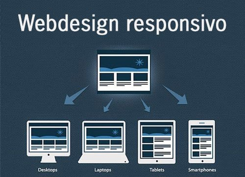

Compartilho ideias, histórias e tutoriais sobre tecnologia, desenvolvimento e muito mais!
Posts Recentes
Como Aprender JavaScript de Forma Eficiente
Aprenda a dominar JavaScript com dicas práticas e exemplos do mundo real. JavaScript é uma das linguagens de programação mais populares e essenciais para desenvolvedores web. Para aprender JavaScript de forma eficiente, é importante seguir uma abordagem estruturada. Comece com os fundamentos: variáveis, operadores, loops e funções. Em seguida, explore conceitos mais avançados, como objetos, arrays e manipulação de DOM. A prática constante é essencial, então desenvolva pequenos projetos para aplicar o que aprendeu. Utilize recursos como tutoriais, documentações e plataformas interativas para melhorar seu aprendizado. Não tenha medo de errar, pois os erros são uma parte importante do processo de aprendizagem. Lembre-se, a chave para se tornar proficiente em JavaScript é a consistência e a prática.

O Impacto do Design Responsivo
Como o design responsivo transforma a experiência do usuário em dispositivos móveis. O design responsivo é uma abordagem fundamental para criar sites que se adaptam a diferentes tamanhos de tela, garantindo uma experiência de usuário ótima em dispositivos móveis, tablets e desktops. Com a crescente utilização de dispositivos móveis para acessar a internet, o design responsivo se tornou uma prioridade. Ao usar media queries e unidades flexíveis como porcentagens e ems, é possível ajustar o layout do site para diferentes resoluções de tela. Isso não apenas melhora a experiência do usuário, mas também é um fator importante para o SEO, já que o Google favorece sites otimizados para dispositivos móveis. O design responsivo é, portanto, uma prática essencial para desenvolvedores e designers web que buscam criar sites modernos e acessíveis.
Como Construir Sites Rápidos e Eficientes
Dicas para otimizar o desempenho do seu site e melhorar a experiência do usuário. A velocidade de um site é crucial tanto para a experiência do usuário quanto para o SEO. Sites lentos podem afastar visitantes e prejudicar sua classificação nos motores de busca. Para construir sites rápidos e eficientes, é importante seguir algumas práticas recomendadas. Comece otimizando as imagens, garantindo que elas sejam compactadas sem perder qualidade. Utilize técnicas de minificação de arquivos CSS e JavaScript para reduzir o tamanho dos arquivos. Além disso, implemente o carregamento assíncrono de scripts e utilize o cache do navegador para melhorar a performance. Certifique-se de que o código seja limpo e bem estruturado, e teste a velocidade do site usando ferramentas como o Google PageSpeed Insights. Sites rápidos não só oferecem uma melhor experiência ao usuário, mas também contribuem para um melhor desempenho nos resultados de busca.
Introdução ao Desenvolvimento Web Full Stack
Uma visão geral sobre o desenvolvimento full stack e como você pode começar a aprender. O desenvolvimento web full stack envolve a criação de aplicativos web completos, desde o front-end até o back-end. Como desenvolvedor full stack, você é responsável por todo o ciclo de vida do desenvolvimento de um site ou aplicativo, o que inclui o design da interface do usuário, a lógica de servidor, o banco de dados e a integração entre eles. Para se tornar um desenvolvedor full stack, é essencial ter conhecimento em várias tecnologias, como HTML, CSS e JavaScript para o front-end, e linguagens como Node.js, Python ou PHP para o back-end. Além disso, é importante conhecer bancos de dados como MySQL ou MongoDB. O desenvolvimento full stack oferece uma visão abrangente de como os aplicativos funcionam e permite que você trabalhe em todas as camadas de um projeto. A flexibilidade e a capacidade de trabalhar tanto no lado do cliente quanto no lado do servidor tornam o desenvolvedor full stack uma peça-chave no mercado de desenvolvimento web.